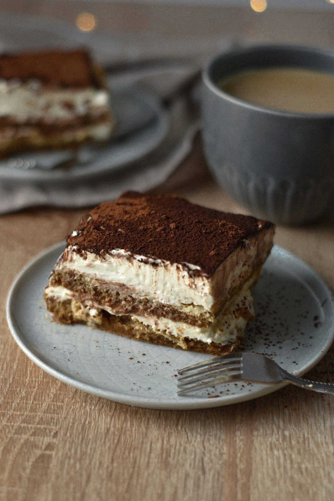

Foto von Aleksandra Tanasiienko auf Unsplash
Ingredients:
- 250 g mascarpone cheese, chilled
- 250 ml heavy whipping cream, chilled
- 3 large egg yolks
- 80 g granulated sugar
- 200 ml strong brewed espresso (cooled to room temperature)
- 2 tbsp coffee liqueur or dark rum (optional)
- 200 g Savoiardi (ladyfinger biscuits)
- 2–3 tbsp unsweetened cocoa powder, for dusting
- Pinch of salt
Steps:
- Brew the espresso, pour it into a shallow dish (stirring in the optional liqueur), and let it cool completely.
- In a heatproof bowl over a pot of barely simmering water (bain-marie), whisk the egg yolks, sugar, and a pinch of salt for 4–5 minutes until pale, thick, and warm. Remove from heat and let cool slightly.
- Gently fold the mascarpone into the egg mixture until smooth. In a separate bowl, whip the chilled heavy cream to stiff peaks, then fold it softly into the mascarpone mixture.
- Quickly dip each ladyfinger into the cooled espresso (about 1 second per side—don't soak them soggy) and arrange a single snug layer in the bottom of a dish.
- Spread half of the mascarpone cream evenly over the ladyfingers. Repeat with a second layer of dipped ladyfingers and the remaining cream.
- Cover and refrigerate for at least 4 hours (ideally overnight). Just before serving, dust generously with unsweetened cocoa powder through a fine sieve.